Earlier work · Sejong University · 2023—2024
Undergraduate Projects
Mechanical design · Embedded hardware · Computer vision
기구 설계와 하드웨어 제작, 컴퓨터 비전을 실제 시스템의 동작으로 연결한 세 개의 팀 프로젝트입니다. 세 프로젝트 모두 시작품 제작과 동작 확인까지 마쳤고, 두 건은 팀장으로 진행했습니다.
Farm
AI Farm Protecting
2023.03—09 · Team Leader · Hardware · Inventor · CATIA V5 · Arduino
농가 피해를 줄이기 위해 카메라로 야생동물을 식별한 뒤, 이동식 분사 장치가 대상을 따라가며 물을 분사하는 시스템을 제작했습니다. 팀장으로서 Inventor 기반 기구 설계와 Arduino 회로 구성을 담당하고, CATIA V5 FEM 해석으로 주요 부품의 구조를 검토했습니다.

Hardware Design
구동부·카메라 하우징 모델링과 모터·펌프 제어 회로를 구성했습니다.
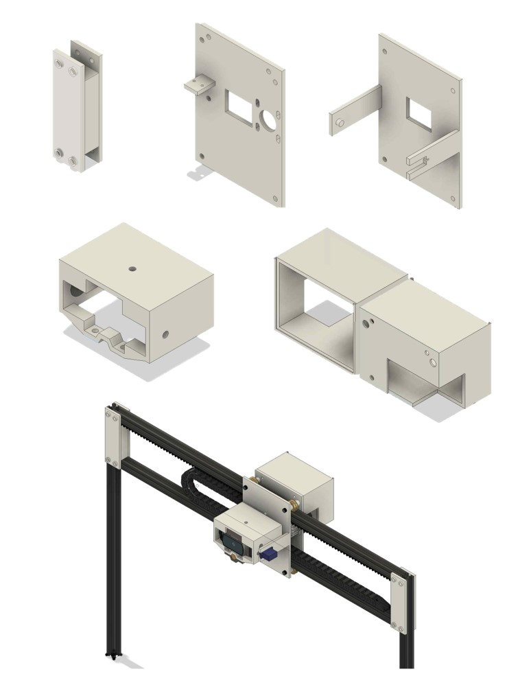
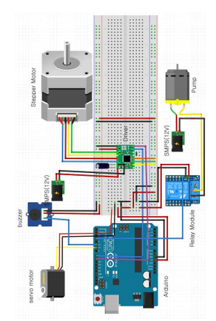
FEM Analysis
응력 분포를 확인해 구조 안전성을 검토하고 과설계를 완화했습니다.
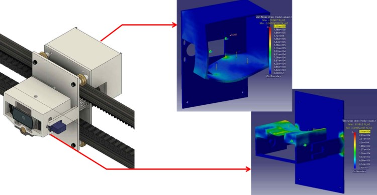
Drone
Creative Aircraft Competition
2023.06—11 · Drone HW · AI SW · CATIA V5 · Python · YOLOv8
이륙과 투하, 장애물 통과, 실시간 숫자 인식, 착륙으로 이어지는 경진대회 임무를 수행할 수 있도록 드론을 설계·제작했습니다. 기체 하드웨어 제작과 함께 YOLOv8 숫자 인식을 구현하고, 데이터를 약 2,000장으로 확장해 약 98 % mAP를 확인했습니다.
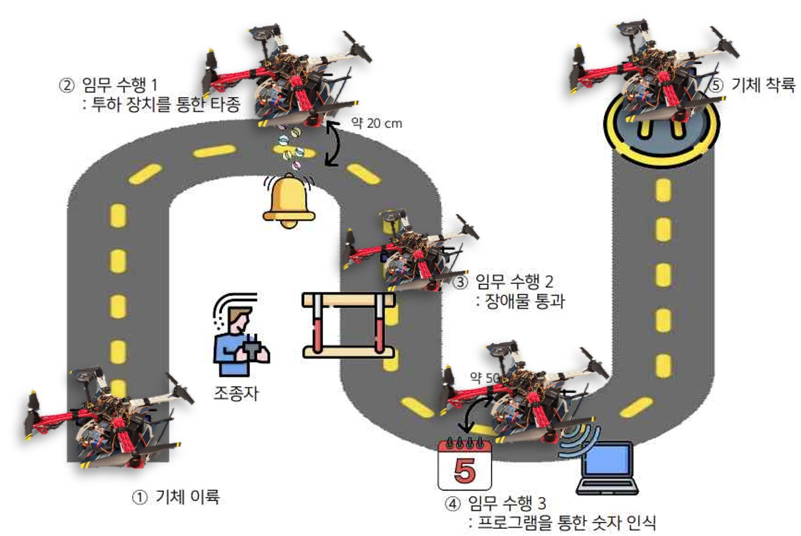
Drone Hardware Design
프레임·전장 부품을 조립하고 모터 추력 조건을 검토했습니다.
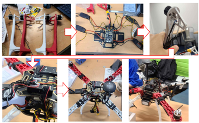

Real-time Digit Recognition
YOLOv8 기반 실시간 인식 · 약 2,000장 학습 데이터 · 약 98 % mAP
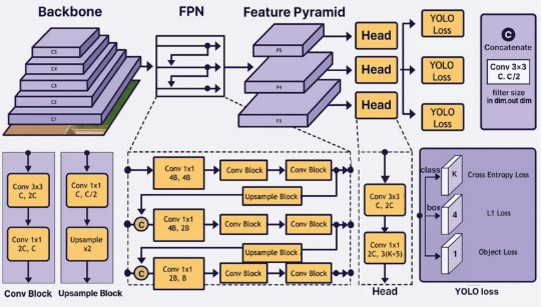
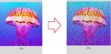
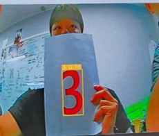
Hand Wash
All-in-One Hand Wash
2024.03—09 · Team Leader · AI SW · Python · MediaPipe · K-NN
공공 화장실의 위생 관리를 위해 손 제스처만으로 물 공급부터 비누, 건조까지 제어할 수 있는 통합 시스템을 제작했습니다. 팀장으로서 MediaPipe와 K-NN 기반 실시간 제스처 인식과 전체 시스템 알고리즘을 담당했고, 약 96.8 %의 인식 정확도를 확인했습니다.

Gesture Recognition
WATER · SOAP · WIND 제스처 분류 · 약 96.8 % 인식 정확도
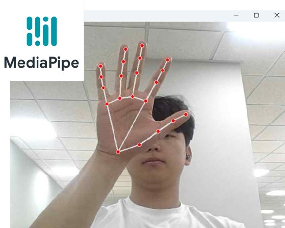
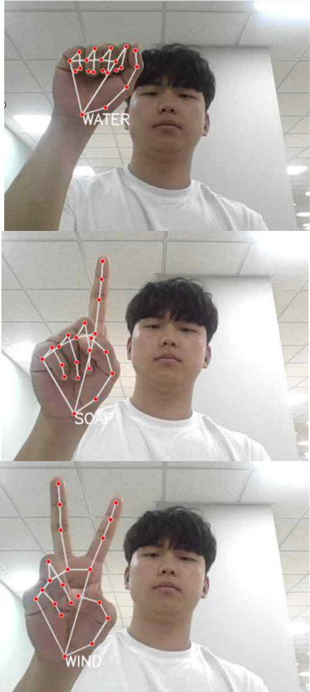
System Algorithm
손 존재 여부와 분류 결과에 따라 물·비누·건조 상태를 전환합니다.
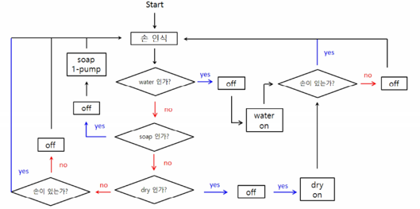